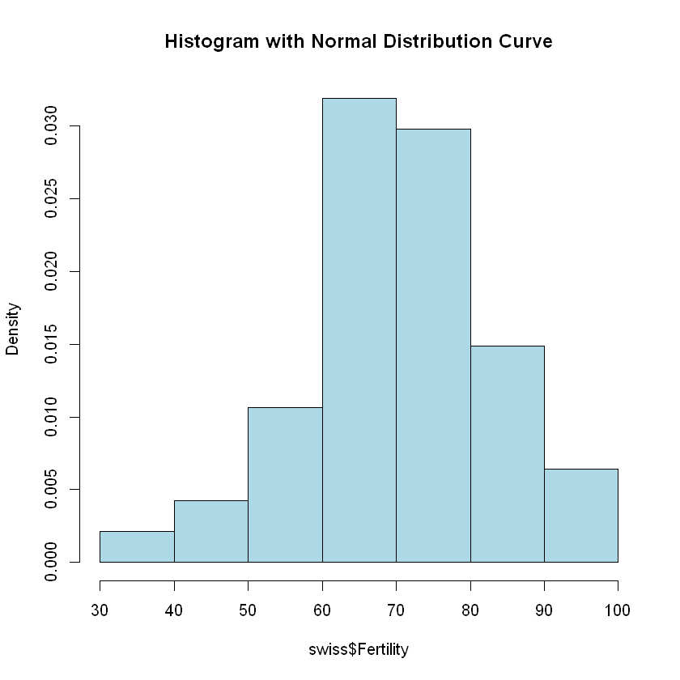
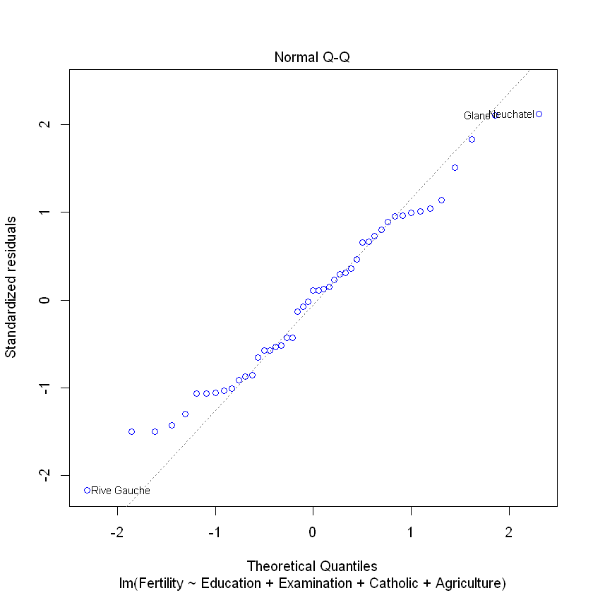

Linear regression#
Research question: What is the relationship between fertility and education?
#lets load the dataset for the linear regression model
data (swiss)
head(swiss)
| Fertility | Agriculture | Examination | Education | Catholic | Infant.Mortality | |
|---|---|---|---|---|---|---|
| Courtelary | 80.2 | 17.0 | 15 | 12 | 9.96 | 22.2 |
| Delemont | 83.1 | 45.1 | 6 | 9 | 84.84 | 22.2 |
| Franches-Mnt | 92.5 | 39.7 | 5 | 5 | 93.40 | 20.2 |
| Moutier | 85.8 | 36.5 | 12 | 7 | 33.77 | 20.3 |
| Neuveville | 76.9 | 43.5 | 17 | 15 | 5.16 | 20.6 |
| Porrentruy | 76.1 | 35.3 | 9 | 7 | 90.57 | 26.6 |
# Create a histogram with a normal distribution curve
hist(swiss$Fertility, probability = TRUE, col = "lightblue", main = "Histogram with Normal Distribution Curve")

According to the plot, it may assume that the outcome is normally distributed.
Now let’s investigate the relationship between the fertility and the education while controlling for Examination, Catholic, Agriculture
# Fit a linear regression model
lm_model <- lm(Fertility ~ Education + Examination + Catholic + Agriculture, data = swiss)
# Summarize the model
summary(lm_model)
Call:
lm(formula = Fertility ~ Education + Examination + Catholic +
Agriculture, data = swiss)
Residuals:
Min 1Q Median 3Q Max
-15.7813 -6.3308 0.8113 5.7205 15.5569
Coefficients:
Estimate Std. Error t value Pr(>|t|)
(Intercept) 91.05542 6.94881 13.104 < 2e-16 ***
Education -0.96161 0.19455 -4.943 1.28e-05 ***
Examination -0.26058 0.27411 -0.951 0.34722
Catholic 0.12442 0.03727 3.339 0.00177 **
Agriculture -0.22065 0.07360 -2.998 0.00455 **
---
Signif. codes: 0 '***' 0.001 '**' 0.01 '*' 0.05 '.' 0.1 ' ' 1
Residual standard error: 7.736 on 42 degrees of freedom
Multiple R-squared: 0.6498, Adjusted R-squared: 0.6164
F-statistic: 19.48 on 4 and 42 DF, p-value: 3.95e-09
# Normal Q-Q Plot
plot(lm_model, which = 2, col = "blue")

Logistic regression#
# Define a binary outcome variable based on Fertility rate
swiss$HighFertility <- ifelse(swiss$Fertility > median(swiss$Fertility), 1, 0)
logit_model <- glm(HighFertility ~ Education + Examination + Catholic + Agriculture,
data = swiss,
family = binomial)
summary(logit_model)
Call:
glm(formula = HighFertility ~ Education + Examination + Catholic +
Agriculture, family = binomial, data = swiss)
Deviance Residuals:
Min 1Q Median 3Q Max
-2.07058 -0.37397 -0.01366 0.43406 1.60842
Coefficients:
Estimate Std. Error z value Pr(>|z|)
(Intercept) 14.02121 5.10091 2.749 0.00598 **
Education -0.15114 0.09363 -1.614 0.10647
Examination -0.43822 0.17297 -2.533 0.01129 *
Catholic 0.02535 0.01403 1.807 0.07078 .
Agriculture -0.12432 0.04825 -2.576 0.00998 **
---
Signif. codes: 0 '***' 0.001 '**' 0.01 '*' 0.05 '.' 0.1 ' ' 1
(Dispersion parameter for binomial family taken to be 1)
Null deviance: 65.135 on 46 degrees of freedom
Residual deviance: 28.952 on 42 degrees of freedom
AIC: 38.952
Number of Fisher Scoring iterations: 6